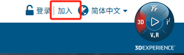
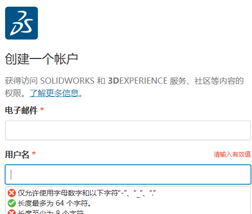
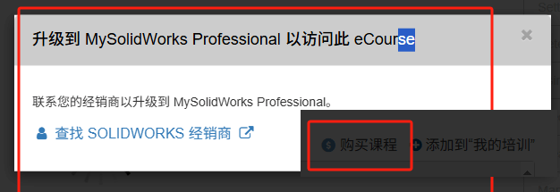
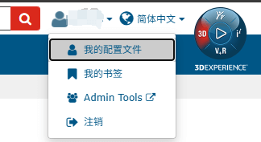
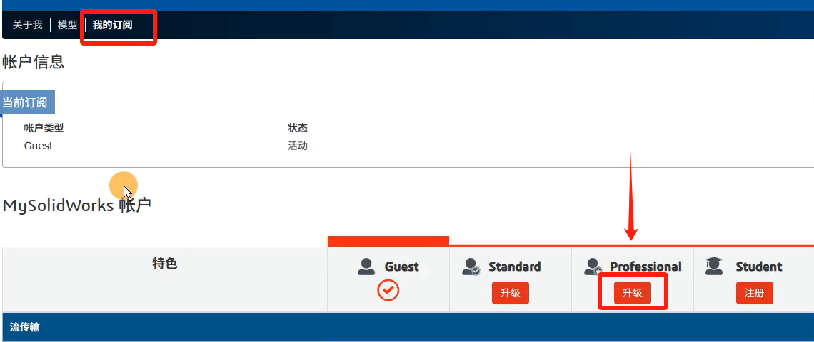
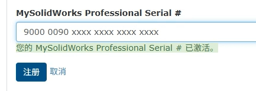

Mysolidworks
Mysolidworks是SolidWorks 交流学习社区。在这里，您可以找到来自整个 SolidWorks 社区的资源和专业知识，以更快地创建更好的设计。
注册&登录
在网页右上角，加入。

按提示填写邮箱和密码等信息即可（邮箱目前暂不支持QQ邮箱），

首次创建的账号是“游客身份”订阅的账号，可以使用的功能有限。如何升级功能订阅可以看下面操作

功能订阅
1、在DSx.Client Care and Order中添加客户的联系人，
2、在Mysolidworks账号配置文件，

3、然后用对应公司的SW序列号（过保的也行），填到Mysolidworks用户账号配置里。


参考
[QA00000310009e](https://kb.dsxclient.3ds.com/mashup-ui/page/resultqa?from=search%3fq%3dMySolidWorks%2bProfessional%2bSerial%2b&id=QA00000310009e&q=MySolidWorks Professional Serial )：如何注销 MySolidWorks Professional 的序列号？每个许可证都绑定到一个用户邮箱，转移需要提NTSR，
[QA00000357311e](https://kb.dsxclient.3ds.com/mashup-ui/page/resultqa?from=search%3fq%3dMySolidWorks%2bProfessional%2bSerial%2b&id=QA00000357311e&q=MySolidWorks Professional Serial )：如何注册 MySolidWorks Professional 的序列号？